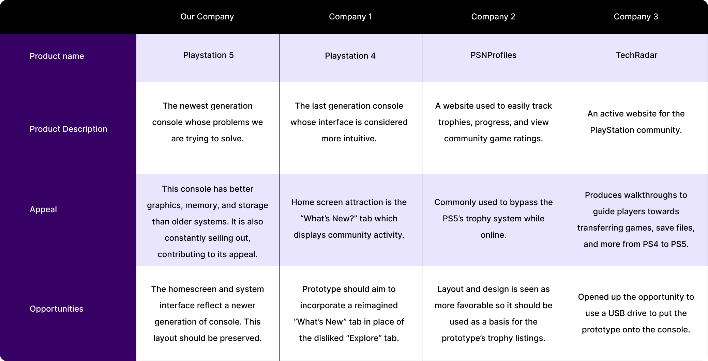
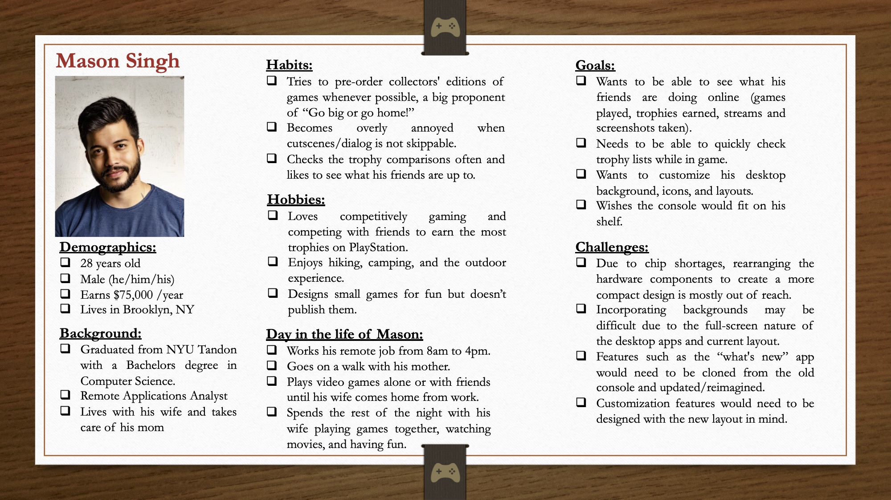
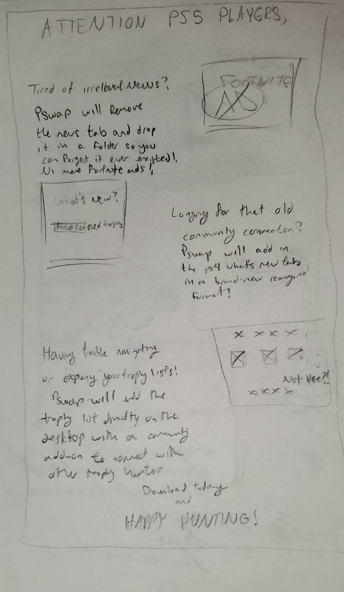
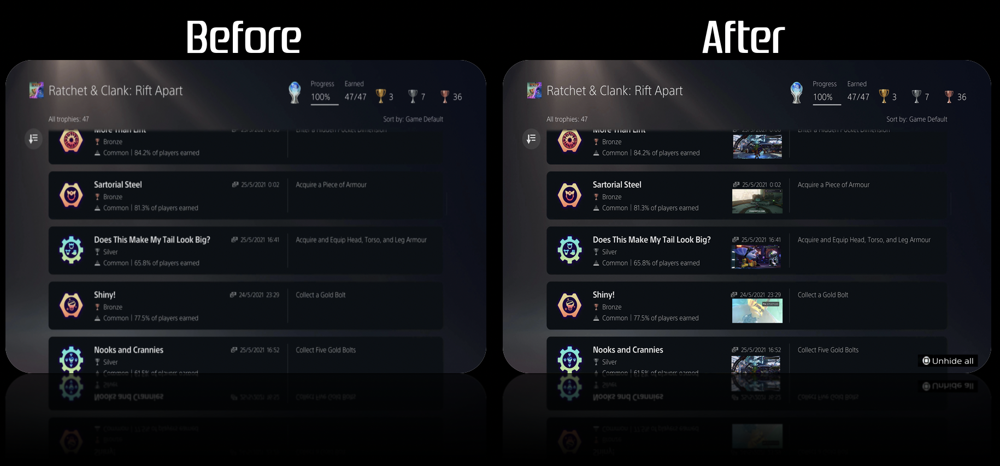
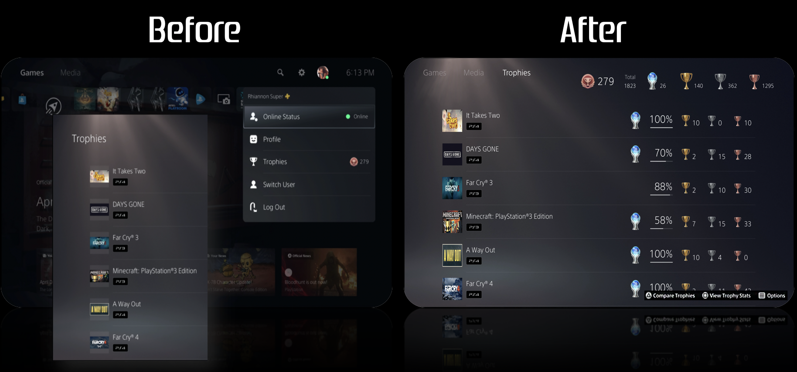
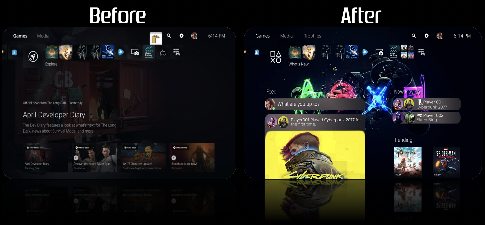

Playstation 5 Homescreen Redesign
A 4-week product research project
Playstation is a gaming company, parented by Sony Interactive Entertainment, which produces consoles, video games, merchandise, and more. It was first introduced in 1994 and has approximately 103 million active users as of September 2022.
The newest edition to this franchise, the Playstation 5 console, has been in high demand for the past 2 years, unable to be kept on store shelves and being sold by third party retailers for over half it's market value.
After researching users and personally using the Playstation 5 console to play games, check trophies, and interact with the community, it was realized that the interface replaced fan-favorite community groups and customization, in favor of full-screen advertisements. It was also noted that the interface did not prioritize the trophy menu, causing it to only be accessible after multiple interactions.
The goal of this redesign is to incorporate a trophy section on the home page to allow trophy hunters to view their achievements faster and easier; allow users to customize their homescreen background; and offer a feature for sorting and moving homescreen applications and games.
HCI Researcher and Designer
4 weeks
Redesign the home screen for the trophy hunting community
Adobe Photoshop
Research and Analysis
To better understand Playstations's background, users, and common uses, I started by conducting research with the following goals in mind:
- Understand Playstation's history, appeal, and services offered
- Learn about the desirability, feasibility, and viability for Playstation
- Determine Playstation's community and which users are in need of assistance
- Identify Playstation's competitors and evaluate their strengths and weaknesses
- Discover goals, needs, and frustrations of gamers using Playstation
I evaluated the Playstation 5's user experience for it's effectiveness based on the Desirability, Feasibility, and Viability principles. This information displays why users might choose the Playstation 5 over another system, website, or service.
Desirability
- Users desire to play video games alone and with friends
- They want one console for multiple interactions (games, music, media, streaming)
- They enjoy owning and using new consoles that add to the gaming experience
Feasibility
- Users need high speed internet and a television built to support the graphics
- The company needs the materials and the workers to build, distribute, and market
- It requires programmers to update the software over time
Viability
- Must ‘push the boundaries of play’ with gameplay, graphics, and increased base memory
- Work within budget of users by offering two different consoles, one for $499 and one for $399
- Return on investment: Users will continue to buy, play, and enjoy games after purchasing
I listed out and classified Playstation 5's main user bases to look into further. The goal of this step is to discover which Playstation 5 user community is in need of assistance and problem solving. The result of this will guide the project's goals and designs. The communities to research further are:
Playstation Gamers
- Have been fans of the previous systems
- Enjoys the company's game exclusives
- Fans of the company overall
Youtubers/Streamers
- Want the console for unboxing purposes
- Learn about it’s specs
- Review overall interaction and feel of the console itself
Trophy Hunters
- Goal is to collect achievements while playing
- Complete a game to it's fullest
- Display their trophies for others to see
I evaluated the Playstation 5's user experience for moments when the product or experience impacted the behaviors, beliefs, emotions, and goals of the user. By understanding how the Playstation 5 helps users make choices, guide their thinking, or persuade them to take action, we can better redesign the interface without interfering with the product's influence over the users. Below is a list of some behaviors:
Unboxing
- The first interaction with the product
- Packaging for the PS5 is now an eco-friendly design
- Can impact users views on global warming, sustainability, and recycling
Games
- Creates a sense of enjoyment, fear, sadness, triumph, and other emotions
Streaming Services
- The availability of streaming softwares on the console allows for family-friendly behaviors
Advertising
- The PS Store’s background contains advertisements for games
- The PS5's homescreen background is filled with advertisements for games
- Guides a user to buy those games, or other products which are being advertised on screen
I analyzed Playstation, along with it's top competitors to evaluate their strengths and opportunities. This information helped me to understand the appeal across all competitors, their unique features, and why users might choose a particular service over another.

Based on the competitive analysis, behavioral analysis, and user experience evaluation, I noted down some of the most difficult challenges that would need to be dealt with during this redesign. Those challenges being:
Chip Shortages and Cost
- Rearranging the hardware components to create a more compact design is mostly out of reach
Backgrounds
- Incorporating them may be difficult due to the full-screen desktop app layout
Community and Customization
- All features would need to be designed with the PS5's new layout in mind
To gain an understanding of accessibility issues that are being encountered by Goodreads users, I conducted secondary research via TikTok videos, Reddit posts, and Quora discussions. The following are a summary of findings:
Affordances and Signifiers
- Playstation 5 can be used for aesthetic purposes due to its plain, white surface
- Two USB ports on the front of the system show that a user's devices can be charged
- If console includes a disc drive, users know they can or cannot insert games and dvds
Constraints
- Largest playstation system to date which might not fit on a standard sized shelf
- Users are only able to change quicklinks tiles which limits customization
- The News/Explore Tab placement forces the user to view advertisements
Human-Centered Design Considerations
- Eco-Friendly Packaging: Appealed to players and onlookers worldwide
- Energy Conservation and Privacy Options: Allowed for smoother gameplay and interaction
- Removal of Customization and Community Features: Created community backlash
- Beta Test and Feedback Program: Should help make human-centered design decisions
Using what was learned from research and analysis, a user persona was created to accurately represent who is being designed for. It was determined that the best course of action was to create a persona to reflect the needs and wants of the Trophy Hunting Community on Playstation 5. This persona helped guide the project's decisions along the design process to make sure the solution is centered on our user and their experiences. Therefore, meet Mason:

Design and Prototyping
The Playstation 5 console's layout is not accessible or appealing to trophy hunters due to it's trophy menu being put out of the way and the mulitple steps it takes to unhide trophies within the list. The interface is upsetting to the community on a second level due to it's lack of customizability and removal of community groups and discussion pages.
Based on the users' needs and wants, the following list of objectives was put together in order to accurately design with the community in mind and achieve maximum satisfaction. The lists of objectives are ordered from Required Features at the top of the list, to Nice to Have Features towards the bottom.
Trophy Lists
- Make more accessible trophy lists by adding a link on the homepage
- Include an Unhide All button for hidden content
- Add screenshots of achievement to trophy page
- Fill in game icons for older generation console trophies
Communities and Customization
- Reimagine the What's New tab for the Playstation 5
- Allow users to move existing homescreen tabs out of the way
- Remove News/Explore tab from the homescreen
- Enable customizable backgrounds
The approach for the HCI experience itself was based on the research conducted surrounding the needs and wants expressed by the community, as well as being able to work off of existing material to ensure that it met the expectations of the target audience and was a feasible solution to the problem.
These expectations included the ability to easily access trophy lists, compare completion progress with friends, and interact with other community members and players while using the Playstation 5 console. In order to make the implementation of these new features painless and simple for the players, it was mocked up to only require a usb, containing the software edits, to be inserted into the system for a one-time download on the user’s part.
The advertisement was set up to be human-centered by expressing the customer’s main pain points using the trending games and complaints as examples.
The advertisement would be marketed on the two reddit forums r/PS5 and r/TrophyHunters to gain the most reach towards active members of this community and would easily link players to the software download for the home screen overwrite along with a step by step guide on how to download the content to the system and access it. The post itself will be a Promoted Post, or an in-feed ad placement, as offered by Reddit and explained by AdParlor. This should allow it to gain more views from any user scrolling past.
Since the advertisement was simply intended to attract users within the target community, the details of how the software would work and the visual mockups were kept at a minimum but will be elaborated on and incorporated into the final design presentation. The advertisement should be simplistic enough that any user scrolling past it can quickly understand the purpose of the post, the software, and the issues it targets without needing to divert their attention for too long since many of these users are on the reddit pages to explore community stories and typically wouldn’t pay as much mind to longer advertisements.
This advertisement for the prototype was based off of the above marketing approach. It features a simplistic design and aims to be accessible to the general public, but the target audience remains as Playstation's Trophy Hunting Community.

Putting together everything that was learned, I was able to create a high fidelity prototype of the Playstation 5's interface which would help our users fulfill their needs and meet their goals.



Through this project, I was able to conduct in-depth user research, analyze the product's uses, evaluate Playstation's human-computer interaction, and create both marketing and prototype high fidelity designs, which would ultimately help form an accessible and usable interface for Playstation 5's Trophy Hunting Community.
It was interesting to explore the different principles of human-computer interaction and human-centered design through this project. I now understand how to evaluate a product's appeal based on desirability, feasibility, and viability, which was something I did not know how to do prior to this project.
Thanks to this unsolicited redesign of the Playstation 5's interface, I feel more confident in assessing user experiences, prototyping user interfaces with Adobe Photoshop, and identifying problems that can arise with even the most in-demand products.
Perform user testing to assess whether or not the prototype design is intuitive and solves the user's problems. Continue to build upon the prototpe until satifsied.
Once it was determined that the new design's changes improved accessibility and usability for Playstation's users, the redesign would be officially marketed to the users and the design would be implemented via USB download.